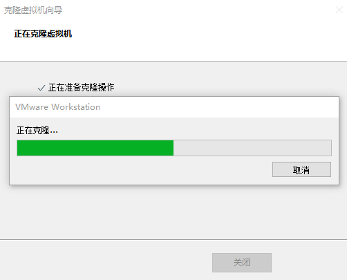

平时开发的时候需要做集群，比如 redis 集群、kafka 集群、微服务集群等等，为了更贴实际，就需要多台虚拟机，使用一个 VMware 开启多个 虚拟机系统，此时固然可以重新创建虚拟机、或者复制虚拟机，但是都没有克隆虚拟机来的快。
克隆虚拟机
-
从现有虚拟机(关机状态)克隆出新虚拟机，右键选择管理=>克隆
-
点击下一步
-
选择虚拟机中的当前状态，下一步

-
选择创建完整克，下一步
-
设置虚拟机名称及存储位置，完成
-
等待克隆完成，关闭

开机修改系统相关配置
修改ip地址
修改/etc/sysconfig/network-scripts/ifcfg-ens33，修改IP 地址
1
|
vim /etc/sysconfig/network-scripts/ifcfg-ens33
|
修改配置信息如下（主要修改IP地址与原虚拟机不同）
1
2
3
4
5
6
7
8
9
10
11
12
13
14
15
16
17
18
19
20
21
|
ONBOOT="yes"
OXY_METHOD="none"
BROWSER_ONLY="no"
BOOTPROTO="static" # IP 的配置方法[none|static|bootp|dhcp]（引导时不使用协议|静态分配IP|BOOTP 协议|DHCP 协议）
DEFROUTE="yes"
IPV4_FAILURE_FATAL="no"
IPV6INIT="yes"
IPV6_AUTOCONF="yes"
IPV6_DEFROUTE="yes"
IPV6_FAILURE_FATAL="no"
IPV6_ADDR_GEN_MODE="stable-privacy"
NAME="ens33"
UUID="60bdb997-ec15-437d-a995-fb97fb852e64" #随机id
DEVICE="ens33" # 接口名（设备,网卡）
ONBOOT="yes" # 系统启动的时候网络接口是否有效（yes/no）
# IP 地址
IPADDR=192.168.0.101
# 网关
GATEWAY=192.168.0.2
# 域名解析器
DNS1=8.8.8.8
|
修改主机名
修改/etc/hostname，修改主机名
修改信息如下（修改主机名与原虚拟机不同）